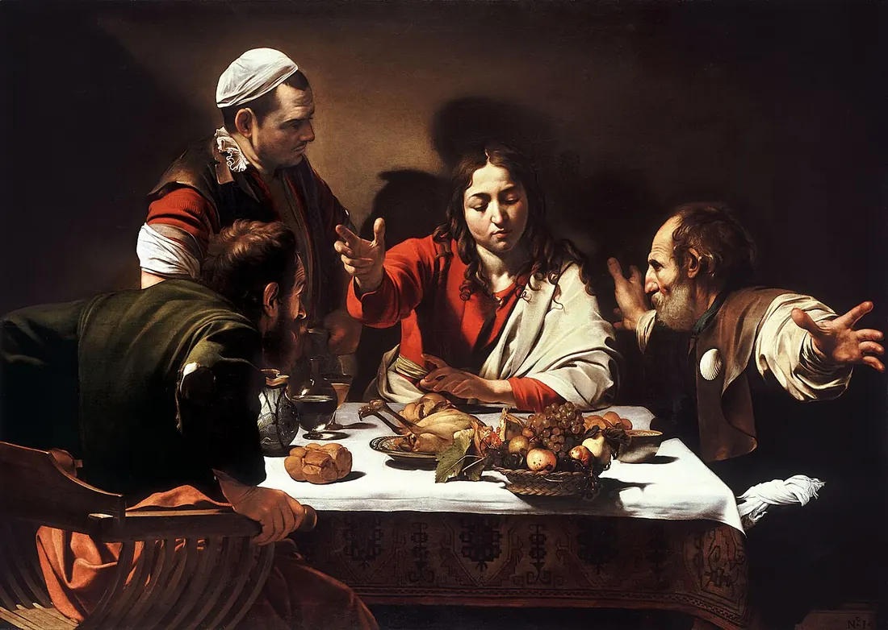

Gotham City · Confidential
Are you Batman?
No cape required. Alibis optional.
Thought so
I knew it.
Yours, always.
Your secret is safe with me. The portrait has already told three people.
Come in
Gotham City · Confidential
No cape required. Alibis optional.
Thought so
Yours, always.
Your secret is safe with me. The portrait has already told three people.
Come inCaravaggio, The Supper at Emmaus, 1601